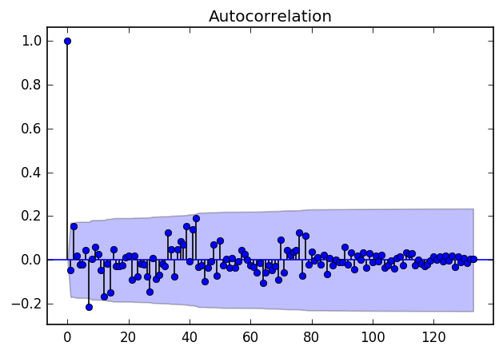
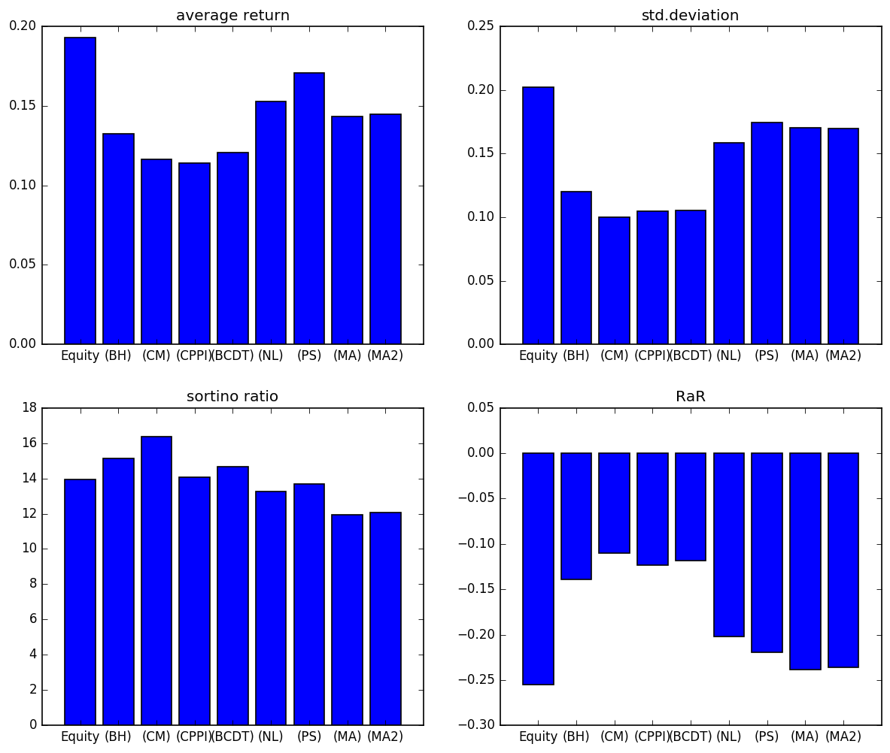

Dynamic asset allocation - a Monte Carlo approach
This artical provides a possible python implementation of the paper by Riccardo Cesari and David Cremonini(2003).
Introduction
Just like the original paper, this article makes an extensive simulation comparison of popular dynamic strategies of asset allocation. For each strategy, Sharpe ratio, Sortino ratio, risk-adjusted return (RaR), etc. are calculated for evaluation. The strategies are compared in different market situations (bull, bear, no-trend markets) and with different market volatility, taking into account transaction costs and discrete rebalancing of portfolios. Finally, I verified the author’s conclusion that constant proportion strategy is dominant in bear and no-trend markets. Moreover, these results are independent of the volatility level and the risk-adjusted measure adopted. Hopefully this will give some implication to the investors.
Strategies
- Buy and Hold: simplest strategy, no need for explanation.
- Constant Mix: keep the market value proportion of the risky assets and riskless assets constant.
- Constant Proportion Portfolio Insurance:
Suppose $E_t$ is the value of the risky assets at time $t$, and $A_t$ is the total value of the portfolio, then the proportion invested in risky assets is defined as
\begin{equation}
E_t = \begin{cases}
\text{min} \left\{A_t, m\left(A_t - F_t \right) \right \}, & \text{if $A_t > F_t$} \\
0, & \text{if $A_t \leq F_t$}
\end{cases}
\end{equation}
where $F_t$ is the floor at time $t$. In this case the floor is defined to be $F_t = Ke^{-r\left(T - t \right )}$, where $K$ is the floor at time $T$. Moreover, we set $m = 2$. Option based strategies:
The idea behind the option based strategies relies on the fact that buying a put option with strike K and maturity T plus one stock can guarantee the floor K and any upside increase realized at maturity T. Based on the initial balance constraint the strategies differ in the following way:BCDT
$$g\left[S_0 + \text{Put}\left(S_0, K \right ) \right ] + B_0 = A_0 $$
where $B_0$ is the initial amount of the risk-free asset(cash).
Using the put funtion, the balance constraint is
$$ gS_0N\left(d_1\left(0 \right ) \right) + gKN\left(-d_2\left(0 \right ) \right)e^{-rT} + B_0 = A_0 $$
At maturity $T$, if the risky asset is below the floor, i.e. $ S_T < K$, the mininum value must beguaranteed:
$$ gK + B_0e^{rT} = K $$
From these conditions and the put-call parity we obtain the value for g, which is
$$ B_0 = \left(1 - g \right )Ke^{-rT} \\
g = \frac{A_0 - Ke^{-rT}}{\text{Call}_0} $$
Therefore the initial capital invested in stock is $gS_0N\left(d_1\left(0 \right ) \right)$. At any time $t$, the value of of capital invested in stock is $gS_tN\left(d_1\left(t \right ) \right)$.
At Maturity:
\begin{equation}
A_T = \begin{cases}
gS_T + B_T = gS_T + \left(1 - g \right )K, & \text{if $S_T > K$} \\
gS_T + B_T = K, & \text{if $S_T < K$}
\end{cases}
\end{equation}NL
Find the strike $H$ and the multiplier $h$ such that
$$ h\left[S_0 + \text{Put}\left(S_0, H \right ) \right ] = A_0 \\
hH = K $$
Defining $S_0^0 = hS_0$ we have
$$ A_0 = S_0^0 + \text{Put}\left(S_0^0, K \right ) = \text{Call}\left(S_0^0, K \right ) + Ke^{-rT} $$
And the value $S_0^0$ can be obtained using Newton-Raphson method, given $A_0$ and $K$.
The amount invested in stock si therefore $N\left(d_1^0 \right)S_0^0 = N\left(d_1^0\left(0 \right) \right)hS_0$. At any time $t$, the value of of capital invested in stock is $N\left(d_1^0\left(t \right) \right)hS_t$.
At maturity:
\begin{equation}
A_T = \begin{cases}
S_T^0 = hS_T, & \text{if $S_T^0 > K$} \\
K, & \text{if $S_T^0 < K$}
\end{cases}
\end{equation}PS
$$ n\text{Call}\left(S_0, K \right ) + B_0 = A_0 $$
Imposing the constraint of a sach at maturity equal to the floor $K$ if the calls will expire out of the money will give equivalent solution to BCDT as a result of put-call parity. On the other hand, imposing a liquidity in $T$ equal to the total delivery payment if the calls will expire in the money we have
$$ n\left(S_T - K \right ) + B_0e^{rT} = nS_T $$
which yields
$$ B_0 = nKe^{-rT} \\
n = \frac{A_0}{\text{Call}_0 + Ke^{-rT}} = \frac{A_0}{S_0 + \text{Put}_0} $$
From the call function we obtain
$$ nS_0N\left(d_1\left(0 \right ) \right) + nKN\left(-d_2\left(0 \right ) \right)e^{-rT} = A_0 $$
Therefore the initial capital invested in stock is $nS_0N\left(d_1\left(0 \right ) \right)$. At any time $t$, the value of of capital invested in stock is $nS_tN\left(d_1\left(t \right ) \right)$.
At maturity:
\begin{equation}
A_T = \begin{cases}
nS_T, & \text{if $S_T^0 > K$} \\
nK, & \text{if $S_T^0 < K$}
\end{cases}
\end{equation}
Moving Average Strategy: if a short memory moving average crosses a long memory moving average from below the trader receives a “buy” signal; if the former crosses the latter from above the signal is to “sell”.
In our simulations the long memory is a 30 week moving average and the short memory is either the current price (MA) or a 10 week moving average (MA2).
Preliminary Test
Random number generation is a crucial step in our simulation. To implement the Monte-Carlo simulation properly, two important assumptions must be guaranteed, which is the normality and independence of the time series data. To justify these assumptions, the normality test and independence test must be carried out with actual market data in order to verify if the simulation setup can be approximately compared with the data generating mechanism of real situations.
The statistical hypothesis tests chosen for testing normality and independence are the Shapiro-Wilk test and the Ljung-Box test, respectively. The Shapiro–Wilk test utilizes the null hypothesis principle to check whether a sample came from a normally distributed population while the Ljung-Box test checks whether any of a group of autocorrelations of a time series are different from zero. The details of these two tests are omitted, however, what is important to know is that the null hypothesis of the Sharpiro-Wilk test is that the population is normally distributed while the null hypothesis of the Ljung-Box test is that the population is independently distributed.
The price series I choose is MSCI World index, the same as the author did. Weekly prices and log-returns are depicted in Fig. 1 and Fig 2, respectively.
In the period January 1997 to July 1999 the Shapiro –Wilk test shows the normality of weekly returns at high significance levels for the World index.
Table 1 Shapiro –Wilk test
| Test statistic | p-value |
|---|---|
| 0.9919 | 0. 6412 |
Moreover, the Ljung–Box test of autocorrelation shows a large degree of randomness in the weekly returns up to 24 lags (120 working days). Detail of the test and the plot of autocorrelation function is shown in Table 2 and Fig. 3.
Table 2 Ljung–Box test
| Lags | p-value | Lags | p-value |
|---|---|---|---|
| 1 | 0.5913 | 13 | 0.2645 |
| 2 | 0.1708 | 14 | 0.1614 |
| 3 | 0.3098 | 15 | 0.1938 |
| 4 | 0.4572 | 16 | 0.2400 |
| 5 | 0.5926 | 17 | 0.2906 |
| 6 | 0.6794 | 18 | 0.3460 |
| 7 | 0.1589 | 19 | 0.4072 |
| 8 | 0.2276 | 20 | 0.4678 |
| 9 | 0.2710 | 21 | 0.4514 |
| 10 | 0.3450 | 22 | 0.5096 |
| 11 | 0.4049 | 23 | 0.5103 |
| 12 | 0.2065 | 24 | 0.5661 |

Overall, we are confident in assuming normality and independence in our simulation exercise.
Simulation Process
- Annual market return and volatility is drawn from uniform distribution in order to cover as many market scenarios as possible.
$$ \mu \sim U\left(-0.3, 0.3 \right) \\
\sigma \sim U\left(0.1, 0.3 \right) $$ - Generate 360 normally distributed weekly returns from $N\left(\frac{\mu}{52}, \frac{\sigma}{\sqrt{52}} \right)$. Also assume $r = 0.03$, $K = S_0 = A_0$.
- Transaction cost are taken into account in two ways: in the form of a cost proportional to the value traded $c = 0.3%$ and as a correction to the option volatility according to Leland (1985) formula:
$$ \sigma_{adj}^2 = \sigma^2\left(1 + c\frac{\sqrt{2/\pi}}{\sigma\sqrt{\Delta t}} \right ) $$ - The 8 strategies are implemented over $T = 260$ rolling window and the first 100 data is used to estimate volatility for the option based strategies.
- Repeat step 1-4 for 10000 times and record results for each simulation.
Results
A preliminary historical simulation using the MSCI World indexes for the period between 1997 and 1999 has been run with weekly rebalance. The results is given in Fig. 4.
The historical simulation shows that PS and NL strategies reach higher returns but also show greater standard deviations. CPL strategy, vice versa, has low returns and low risk. With the exception of technical rules, the fundamental law of finance seems to be confirmed by the considered strategies applied to the World equity market.
Historical simulations, however, do not allow us to properly compare the considered strategies and test the significance of the performance differences. For this purpose we have run the Monte Carlo simulation process described in Section 3. Summary statistics for the nine strategies and the stock market index are reported in Figs. 5–8.
In terms of identifying different markets, devide the market return into three categories, namely $\left(-0.3, -0.05 \right )$, $\left(-0.05, 0.05 \right )$ and $\left(0.05, 0.3 \right )$. The performances of each strategy under different markets trends are summarized as follows:

Also, divide the market volatility into $\left(0.1, 0.15 \right )$, $\left(0.15, 0.25 \right )$ and $\left(0.25, 0.3 \right )$ to denote low volatility, medium volatility and high volatility, respectively. Comparing the performances under different combinations of market scenarios gives
Table 3 Best strategy in Monte Carlo simulations
| Low Volatility | Medium Volatility | High Volatility | All Scenarios | ||
|---|---|---|---|---|---|
| Sortino | |||||
| Bear Market | CPPI, NL, BCDT, MA2 | CPPI | CPPI | CPPI | |
| No-trend Market | CPPI | CPPI | CM | CM, CPPI | |
| Bull Market | CM, BH | CM | CM | CM | |
| All Market | BCDT, CPPI, NL, MA2 | BCDT, CPPI | BCDT, CPPI | BCDT, CPPI | |
| RaR | |||||
| Bear Market | CPPI | CPPI | CPPI, BCDT | CPPI | |
| No-trend Market | CPPI | CPPI | CPPI | CPPI | |
| Bull Market | CM | CM | CM | CM | |
| All Market | BCDT, CPPI | BCDT, CPPI | BCDT, CPPI | BCDT, CPPI |
The main findings, with weekly rebalance, are the following:
- in a bear market as well as in a market without trend CPPI strategies appear to be the best choice, both in terms of Sortino ratio and in terms of RaR. In the absence of trends but with high volatility CM strategy (benchmarking) is preferable, according to Sortino ratio. CM is also recommended in bull markets;
- if the market phase is unknown (uniform prior probability for bear, no-trend and bull market) CPPI and BCDT are the best performing strategies;
- the best strategy is almost independent of the volatility level prevailing in the market, at least in the considered range 10–30% suggested by the historical data. This is especially true using the RaR criterion;
- in contrast with the historical simulation, in the Monte Carlo experiment the best strategy is largely independent of the adopted performance measure.
Possible cumulative return curves are shown in Fig. 9 to Fig. 11.

Extension
In the original paper, the author claims that CPPI is dominated in both bear and no trend markets while CM is preferable in the bull markets in terms of Sortino ratio, which we already verified.
Notice that in the replication process we stuck to the author’s assumption that the index prices follows a geometric Brownian motion, which implies the continuity nature of the index evolution. However, in the real markets, as shown in Fig. 12, there are often jumps during some periods, this may be due to some macroeconomic factors or financial crisis, which cannot be depicted by the original model. Therefore the original conclusions are not robust under real markets conditions.
It’s natural to incorporate the jump diffusion into the index price movement, and this is where the jump diffusion model, introduced by Robert C. Merton, comes into play. The jump diffusion model uses Poisson process to depict the jump events, and mathematically it can be written as follows
$$ S_t = S_0\text{exp}\left(\left(\mu - \frac{\sigma^2}{2} \right )t + \sigma W_t + \sum_{i=1}^{N_t}Y_it \right ) $$
where $N_t$ is a poisson process and $Y_i$ is the size of each jump on a annual basis.
Since we already confirmed the CM strategy is less attractive than CPPI under bear markets and preferable under bull markets, it’s tempting to investigate whether it’s still preferable to CPPI under bull markets with the existence of jumps. We don’t investigate the bear markets with jumps because of the insurance nature of the CPPI, which makes it immune to any kinds of downward trend.
Specifically, we let $\mu \sim U(0.3,0.5)$, $\sigma \sim U(0.1,0.3)$, $\lambda=2.5$, where $\lambda$ is the expected number of jumps during one year. Moreover, $Y_i \sim N(-4,1.5)$, which is the jump size on the annual basis. The simulation results are depicted in Fig. 13.
Remember in the previous plot, CM strategy outperformed CPPI in the bull market with respect to every performance measure. However, after incorporating the effect of the jump diffusion, the performance of CM strategy is almost identical to the performance of CPPI as shown above except that the Sortino ratio of CM is still higher than CPPI by a small amount. Therefore we can conclude that CPPI strategy is also a relatively robust strategy under bull markets for risk-averse investors.
Possible cumulative return curves of different strategies are shown in Fig. 14 and 15.
Conclusions
The results show a dominant role of constant proportion strategy (CPPI) in bear, no-trend markets and possibly bull markets for risk-averse investors and a preference for a constant mix strategy (CM) in bull markets. In the case of total ignorance about the market phase, CPPI and BCDT are the best strategies. Moreover, these results are independent of the volatility prevailing in the market.
Python Implementation
The implementation is based on my own back-testing platform. Core parts of the the Monte Carlo routine is as follows:
Backtest module:1
2
3
4
5
6
7
8
9
10
11
12
13
14
15
16
17
18
19
20
21
22
23
24
25
26
27
28
29
30
31
32
33
34
35
36
37
38
39
40
41
42
43
44
45
46
47
48
49
50
51
52
53
54
55
56
57
58
59
60
61
62
63
64
65
66
67
68
69
70
71
72
73
74
75
76
77
78
79
80
81
82
83
84
85
86
87
88
89
90
91
92
93
94
95
96
97
98
99
100
101
102
103
104
105
106
107
108
109
110
111
112
113
114
115
116
117
118
119
120
121
122
123
124
125
126
127
128
129
130
131
132
133
134
135
136
137
138
139
140
141
142
143
144
145
146import pprint
import Queue
import datetime
import time
import cPickle
import matplotlib.pyplot as plt
import pandas_datareader.data as web
from data_handler import YahooDataHandler, MonteCarloDataHandler, CSVDataHandler
from position_handler import PositionHandler
from order_handler import OrderHandler
from strategy.strategy import BuyHold, ConstantMix, ConstantProportion, \
BCDT, NL, PS, MovingAverage, MovingAverage2
from performance import *
class Backtest(object):
"""
Enscapsulates the settings and components for carrying out
an event-driven backtest.
"""
def __init__(
self, symbols, initial_capital,
start, end, data_handler_cls,
position_handler_cls, order_handler_cls, strategy_cls, interval, index=None
):
"""
Initialises the backtest.
Parameters:
symbols - The list of symbol strings.
intial_capital - The starting capital for the portfolio.
start - The start datetime of the strategy.
end - The end datetime of the strategy.
data_handler_cls - (Class) Handles the market data feed.
order_handler_cls - (Class) Keeps track of portfolio current
and prior positions.
strategy_cls - (Class) Generates signals based on market data.
"""
self.symbols = symbols
self.start = start
self.end = end
self.events = Queue.Queue()
self.interval = interval
self.data_handler = data_handler_cls(self.events, symbols, start, end,
interval, index)
self.position_handler = position_handler_cls(self.data_handler,
initial_capital)
self.order_handler = order_handler_cls(self.events)
self.strategy = strategy_cls(self.data_handler,
self.position_handler,
self.events)
self.orders = 0
def simulate_trading(self):
"""
Executes the backtest.
"""
while True:
# Update the market bars
if self.data_handler.continue_backtest == True:
self.data_handler.update_bars() # Produce market event
else:
break
# Handle the events
# If events queue is not empty, do the loop
while True:
try:
event = self.events.get(False)
except Queue.Empty:
break
else:
if event is not None:
if event.type == 'MARKET':
# Produce signal event
if self.data_handler.elapsed >= 30:
self.position_handler.update_from_new(event)
self.strategy.generate_signals(event)
elif event.type == 'SIGNAL':
# Produce order
self.order_handler.generate_order(event)
elif event.type == 'ORDER':
self.orders += 1
# Produce fill
self.position_handler.update_from_order(event)
position_df = pd.DataFrame(
self.position_handler.historical_position
)
position_df.set_index('datetime', inplace=True)
position_df['returns'] = position_df['total'].pct_change()
# Cumulative production, first element NaN
position_df['cumulative_returns'] = \
(1.0 + position_df['returns']).cumprod()
position_df = position_df.dropna()
position_df = position_df.loc[:, ('returns', 'cumulative_returns')]
# The following only valid for Monte Carlo datahandler
self.record = {'mu': self.data_handler.mu[0], # markeet
'sigma': self.data_handler.sigma[0], # market
'performance': position_df,
'orders': self.orders,
'interval': self.interval
}
# with open('%s results.pkl' % self.strategy.id, 'wb') as f:
# cPickle.dump(self.record, f)
# print('Simulation results have been pickled into file')
if __name__ == "__main__":
# Get the time index
price_df = web.get_data_yahoo(symbols[0], start, end, interval='w')
assert len(price_df.index) >= 260
index = price_df.index[:260]
#
# # Strategy list
strategy = [BuyHold, ConstantMix, ConstantProportion,
BCDT, NL, PS, MovingAverage, MovingAverage2]
##############################################
# Loop over all strategies, each 10000 times #
##############################################
for s in strategy:
for i in range(0, 10000):
backtest = Backtest(
symbols, initial_capital, start,
end, MonteCarloDataHandler, PositionHandler,
OrderHandler, s, 'w', index
)
backtest.simulate_trading()
p = backtest.record
repo = backtest.strategy.id.strip().split(' ')[-1]
with open('%s/%d.pkl' % (repo, i+1), 'wb') as f:
cPickle.dump(backtest.record, f)
print('Simulation %d finished' % (i+1,))
#output_performance('%s/%d.pkl' % (repo, i+1), repo)
Strategy module:1
2
3
4
5
6
7
8
9
10
11
12
13
14
15
16
17
18
19
20
21
22
23
24
25
26
27
28
29
30
31
32
33
34
35
36
37
38
39
40
41
42
43
44
45
46
47
48
49
50
51
52
53
54
55
56
57
58
59
60
61
62
63
64
65
66
67
68
69
70
71
72
73
74
75
76
77
78
79
80
81
82
83
84
85
86
87
88
89
90
91
92
93
94
95
96
97
98
99
100
101
102
103
104
105
106
107
108
109
110
111
112
113
114
115
116
117
118
119
120
121
122
123
124
125
126
127
128
129
130
131
132
133
134
135
136
137
138
139
140
141
142
143
144
145
146
147
148
149
150
151
152
153
154
155
156
157
158
159
160
161
162
163
164
165
166
167
168
169
170
171
172
173
174
175
176
177
178
179
180
181
182
183
184
185
186
187
188
189
190
191
192
193
194
195
196
197
198
199
200
201
202
203
204
205
206
207
208
209
210
211
212
213
214
215
216
217
218
219
220
221
222
223
224
225
226
227
228
229
230
231
232
233
234
235
236
237
238
239
240
241
242
243
244
245
246
247
248
249
250
251
252
253
254
255
256
257
258
259
260
261
262
263
264
265
266
267
268
269
270
271
272
273
274
275
276
277
278
279
280
281
282
283
284
285
286
287
288
289
290
291
292
293
294
295
296
297
298
299
300
301
302
303
304
305
306
307
308
309
310
311
312
313
314
315
316
317
318
319
320
321
322
323
324
325
326
327
328
329
330
331
332
333
334
335
336
337
338
339
340
341
342
343
344
345
346
347
348
349
350
351
352
353
354
355
356
357
358
359
360
361
362
363
364
365
366
367
368
369
370
371
372
373
374
375
376
377
378
379
380
381
382
383
384
385
386
387
388
389
390
391
392
393
394
395
396
397
398
399
400
401
402
403
404
405
406
407
408
409
410
411
412
413
414
415
416
417
418
419
420
421
422
423
424
425
426
427
428
429
430
431
432
433
434
435
436
437
438
439
440
441
442
443
444
445
446
447
448
449
450
451
452
453
454
455
456
457
458
459
460
461
462
463
464
465
466
467
468
469
470
471
472
473
474
475
476
477
478
479
480
481
482
483
484
485
486
487
488
489
490
491
492
493
494
495
496
497
498
499
500
501
502
503
504
505
506
507
508
509
510
511
512
513
514
515
516
517
518
519
520
521
522
523
524
525
526
527
528
529
530
531
532
533
534
535
536
537
538
539
540
541
542
543
544
545
546
547
548
549
550
551
552
553
554
555
556
557
558
559
560
561
562
563
564
565
566
567
568
569
570
571
572
573
574
575
576
577
578
579
580
581
582
583
584
585
586
587
588
589
590
591
592
593
594
595
596
597
598
599
600
601
602
603
604
605
606
607
608
609
610
611
612
613
614
615
616
617
618
619
620
621
622
623
624
625
626
627
628
629
630
631
632
633
634
635
636
637
638
639
640
641
642
643
644
645
646
647
648
649
650
651
652
653
654
655
656
657
658
659
660
661
662
663
664
665
666
667
668
669
670
671
672
673
674
675
676
677
678
679
680
681
682
683
684
685
686
687
688
689
690
691
692
693
694
695
696
697
698
699
700
701
702
703
704
705
706
707
708
709
710
711
712
713
714
715
716
717
718
719
720
721
722
723
724
725
726
727
728
729
730
731
732
733
734
735
736
737
738
739
740
741
742
743
744
745
746
747
748
749
750
751
752
753
754
755
756
757
758
759
760
761
762
763
764
765
766
767
768
769
770
771from abc import ABCMeta, abstractmethod
import numpy as np
from scipy.stats import norm
from event import SignalEvent
class BuyHold(BaseStrategy):
"""
Keep initial quantities constant.
"""
def __init__(
self, data_handler, position_handler, events, ratio=0.5, mode='even'):
"""
@Parameters:
evnets - Events queue shared with backtest.
bought - 'OUT', 'LONG' or 'SHORT'.
ratio - The proportion of risky component.
mode - Useful for multi-stock model. For the project, I didn't
implement this funcionality.
"""
self.id = 'Buy Hold (BH)'
self.data_handler = data_handler
self.position_handler = position_handler
self.symbols = self.data_handler.symbols
self.events = events
self.ratio = ratio
self.mode = mode
self.bought = dict((s, 'OUT') for s in self.symbols)
def generate_signals(self, event):
"""
Generate buy signal at the beginning and do not do anything later.
"""
assert event.type == 'MARKET'
symbols = []
prices = []
quantities = []
directions = []
time = self.data_handler.get_latest_bar(self.symbols[0])[0]
############################
# Assume evenly allocation #
############################
risky_alloc = self.position_handler.initial_capital * self.ratio
num = len(self.symbols)
individual_alloc = risky_alloc / num
for symbol in self.symbols:
if self.bought[symbol] != 'OUT':
return
else:
price = self.data_handler.get_latest_bar_value(symbol,
'Adj Close')
symbols.append(symbol)
prices.append(price)
###############################
# Calculate quantities needed #
###############################
quantity = round(individual_alloc / price, 4)
quantities.append(quantity)
directions.append('BUY')
self.bought[symbol] = 'LONG'
self.events.put(SignalEvent(time, symbols,
np.array(prices), np.array(quantities),
directions))
class ConstantMix(BaseStrategy):
"""
Keep the initial portfolio share constant, i.e. the ratio between the
values of risky asset and risk-free asset is constant.
Rebalance on a weekly basis.
No short selling allowed.
"""
def __init__(
self, data_handler, position_handler, events, ratio=0.5, mode='even'):
"""
@Parameters:
evnets - Events queue shared with backtest.
ratio - The proportion of risky component.
mode - Useful for multi-stock model. For the project, I didn't
implement this funcionality.
"""
self.id = 'Constant Mix (CM)'
self.data_handler = data_handler
self.position_handler = position_handler
self.symbols = self.data_handler.symbols
self.events = events
self.ratio = ratio
self.mode = mode
def generate_signals(self, event):
"""
Implement the strategy.
"""
assert event.type == 'MARKET'
symbols = []
prices = []
quantities = []
directions = []
time = self.data_handler.get_latest_bar(self.symbols[0])[0]
############################
# Assume evenly allocation #
############################
portfolio_value = self.position_handler.current_position['total']
risky_alloc = portfolio_value * self.ratio
num = len(self.symbols)
individual_alloc = risky_alloc / num
for symbol in self.symbols:
trigger = False
price = self.data_handler.get_latest_bar_value(symbol, 'Adj Close')
quantity = 0.
direction = None
##################################
# Test whether need to rebalance #
##################################
mkt_value = self.position_handler.current_position[symbol][2]
if abs(individual_alloc/mkt_value - 1.) > 1e-2:
direction = 'BUY' if individual_alloc > mkt_value else 'SELL'
quantity = round(abs(individual_alloc - mkt_value) / price, 4)
trigger = True if quantity != 0. else False
if trigger:
symbols.append(symbol)
prices.append(price)
quantities.append(quantity)
directions.append(direction)
if len(symbols) != 0:
# only release signal when the lists are not empty
self.events.put(SignalEvent(time, symbols,
np.array(prices), np.array(quantities),
directions))
class ConstantProportion(BaseStrategy):
"""
Keep the risky component over the cusion fixed.
E_t = min(A_t, m(A_t - F_t)^+), where F_0 * exp(rT) = K, m is fixed.
Rebalance on a weekly basis.
No short selling allowed.
"""
def __init__(
self, data_handler, position_handler, events, m=2., interval='w', mode='even'):
"""
@Parameters:
evnets - Events queue shared with backtest.
m - The multiplier with respect to the cushion.
floor - The granted level at time T.
mode - Useful for multi-stock model. For the project, I didn't
implement this funcionality.
initialized - Since the starting portfolio is 50-50 stock-cash, this
helps to specify the different allocation strategy.
"""
self.id = 'Constant Proportion (CPPI)'
self.data_handler = data_handler
self.position_handler = position_handler
self.symbols = data_handler.symbols
self.events = events
self.m = m
self.interval = interval
self.floor = position_handler.initial_capital
self.r = data_handler.r
self.T = data_handler.T
self.mode = mode
self.initialized = False
def generate_signals(self, event):
"""
Implement the strategy.
"""
assert event.type == 'MARKET'
symbols = []
prices = []
quantities = []
directions = []
time = self.data_handler.get_latest_bar(self.symbols[0])[0]
############################
# Assume evenly allocation #
############################
basis = 252. if self.interval=='d' else 52. if self.interval=='w' else 12.
# since the strategy starts at 101st iteration,
# also note that this is a weekly strategy, denominator = 52.
T = self.T - self.position_handler.elapsed / basis
portfolio_value = self.position_handler.current_position['total']
risky_alloc = 0.
if self.initialized:
risky_alloc = min(
portfolio_value,
max(
self.m*(portfolio_value - self.floor*np.exp(-self.r * T)),
0.
)
)
else:
risky_alloc = portfolio_value * 0.5
self.initialized = True
num = len(self.symbols)
individual_alloc = risky_alloc / num
for symbol in self.symbols:
trigger = False
price = self.data_handler.get_latest_bar_value(symbol, 'Adj Close')
quantity = 0.
direction = None
##################################
# Test whether need to rebalance #
##################################
mkt_value = self.position_handler.current_position[symbol][2]
if abs(individual_alloc/mkt_value - 1.) > 1e-2:
direction = 'BUY' if individual_alloc > mkt_value else 'SELL'
quantity = round(abs(individual_alloc - mkt_value) / price, 4)
trigger = True if quantity != 0. else False
if trigger:
symbols.append(symbol)
prices.append(price)
quantities.append(quantity)
directions.append(direction)
if len(symbols) != 0:
# only release signal when the lists are not empty
self.events.put(SignalEvent(time, symbols,
np.array(prices), np.array(quantities),
directions))
##############################################
# Utility function for option based strategy #
##############################################
def d_1(S, r, K, T, sigma):
return (np.log(S/K) + (r+0.5*sigma**2)*T) / (sigma * np.sqrt(T))
def d_2(S, r, K, T, sigma):
return (np.log(S/K) + (r-0.5*sigma**2)*T) / (sigma * np.sqrt(T))
def call(S, r, K, T, sigma):
return S*norm.cdf(d_1(S, r, K, T, sigma)) - \
K*np.exp(-r*T)*norm.cdf(d_2(S, r, K, T, sigma))
def put(S, r, K, T, sigma):
return -S*norm.cdf(-d_1(S, r, K, T, sigma)) + \
K*np.exp(-r*T)*norm.cdf(-d_2(S, r, K, T, sigma))
######################################
# f(S) = C(S,K) + K*exp(-rT) - K = 0 #
######################################
def newton_solver(S, r, K, T, sigma):
d1 = lambda x: (np.log(x/K) + (r+0.5*sigma**2)*T) / \
(sigma * np.sqrt(T))
d2 = lambda x: d1(x) - sigma * np.sqrt(T)
f = lambda x: x*norm.cdf(d1(x)) + K*np.exp(-r*T)*norm.cdf(-d2(x)) - K
S = S
while(abs(f(S)) > 1e-3):
S -= f(S) / norm.cdf(d1(S))
assert np.isfinite(S)
return S
class BCDT(BaseStrategy):
"""
Reference Bird et al. (1990)
Single stock strategy. Initial stock price must equal to initial capital.
Rebalance on a weekly basis.
No short selling allowed.
"""
def __init__(
self, data_handler, position_handler, events, interval='w', mode='even'):
"""
@Parameters:
evnets - Events queue shared with backtest.
m - The multiplier with respect to the cushion.
K - The granted level at time T.
mode - Useful for multi-stock model. For the project, I didn't
implement this funcionality.
initialized - Since the starting portfolio is 50-50 stock-cash, this
helps to specify the different allocation strategy.
"""
self.id = 'Option Based (BCDT)'
self.data_handler = data_handler
self.position_handler = position_handler
self.symbols = data_handler.symbols
assert len(self.symbols) == 1
self.events = events
self.interval = interval
self.K = position_handler.initial_capital
self.r = data_handler.r
self.T = data_handler.T
self.mode = mode
self.vol_period = 100
self.initialized = False
def generate_signals(self, event):
"""
Implement the strategy.
"""
assert event.type == 'MARKET'
symbols = []
prices = []
quantities = []
directions = []
time = self.data_handler.get_latest_bar(self.symbols[0])[0]
############################
# Assume evenly allocation #
############################
portfolio_value = self.position_handler.current_position['total']
basis = 252. if self.interval=='d' else 52. if self.interval=='w' else 12.
###############################
# Parameters for option value #
###############################
T = self.T - self.vol_period/basis - self.position_handler.elapsed / basis
S = self.data_handler.get_latest_bar_value(self.symbols[0], 'Adj Close')
sigma = 0.
if self.data_handler.elapsed < self.vol_period:
sigma = self.data_handler.sigma[0]
else:
recent_prices = self.data_handler.get_recent_bars_values(
self.symbols[0], 'Adj Close', self.vol_period)
sigma = np.std(recent_prices, ddof=1)
sigma_adj = sigma * np.sqrt(1+0.003/sigma*np.sqrt(2*52./np.pi))
d1 = d_1(S, self.r, self.K, T, sigma_adj)
risky_alloc = 0.
if self.initialized:
risky_alloc = self.g * S * norm.cdf(d1)
# print (risky_alloc / portfolio_value)
else:
risky_alloc = portfolio_value * 0.5
########################################
# Calculate g and B_0 at the beginning #
########################################
call0 = call(self.K, self.r, self.K, T, sigma_adj)
self.g = (self.K - self.K*np.exp(-self.r*T)) / call0
self.initialized = True
num = len(self.symbols)
individual_alloc = risky_alloc / num
for symbol in self.symbols:
trigger = False
price = self.data_handler.get_latest_bar_value(symbol, 'Adj Close')
quantity = 0.
direction = None
##################################
# Test whether need to rebalance #
##################################
mkt_value = self.position_handler.current_position[symbol][2]
if abs(individual_alloc/mkt_value - 1.) > 1e-2:
direction = 'BUY' if individual_alloc > mkt_value else 'SELL'
quantity = round(abs(individual_alloc - mkt_value) / price, 4)
trigger = True if quantity != 0. else False
if trigger:
symbols.append(symbol)
prices.append(price)
quantities.append(quantity)
directions.append(direction)
if len(symbols) != 0:
# only release signal when the lists are not empty
self.events.put(SignalEvent(time, symbols,
np.array(prices), np.array(quantities),
directions))
class NL(BaseStrategy):
"""
Single stock strategy.
Rebalance on a weekly basis.
No short selling allowed.
"""
def __init__(
self, data_handler, position_handler, events, interval='w', mode='even'):
"""
@Parameters:
evnets - Events queue shared with backtest.
m - The multiplier with respect to the cushion.
K - The granted level at time T.
mode - Useful for multi-stock model. For the project, I didn't
implement this funcionality.
initialized - Since the starting portfolio is 50-50 stock-cash, this
helps to specify the different allocation strategy.
"""
self.id = 'Option Based (NL)'
self.data_handler = data_handler
self.position_handler = position_handler
self.symbols = data_handler.symbols
assert len(self.symbols) == 1
self.events = events
self.interval = interval
self.K = position_handler.initial_capital
self.r = data_handler.r
self.T = data_handler.T
self.mode = mode
self.vol_period = 100 # period used to estimate volatility
self.initialized = False
def generate_signals(self, event):
"""
Implement the strategy.
"""
assert event.type == 'MARKET'
symbols = []
prices = []
quantities = []
directions = []
time = self.data_handler.get_latest_bar(self.symbols[0])[0]
############################
# Assume evenly allocation #
############################
portfolio_value = self.position_handler.current_position['total']
basis = 252. if self.interval=='d' else 52. if self.interval=='w' else 12.
###############################
# Parameters for option value #
###############################
T = self.T - self.vol_period/basis - self.position_handler.elapsed / basis
S = self.data_handler.get_latest_bar_value(self.symbols[0], 'Adj Close')
sigma = 0.
if self.data_handler.elapsed < self.vol_period:
sigma = self.data_handler.sigma[0]
else:
recent_prices = self.data_handler.get_recent_bars_values(
self.symbols[0], 'Adj Close', self.vol_period)
sigma = np.std(recent_prices, ddof=1)
sigma_adj = sigma * np.sqrt(1+0.003/sigma*np.sqrt(2*52./np.pi))
risky_alloc = 0.
if self.initialized:
d1_0 = d_1(S*self.h, self.r, self.K, T, sigma_adj)
risky_alloc = norm.cdf(d1_0) * self.h * S
else:
risky_alloc = portfolio_value * 0.5
################################
# Calculate h at the beginning #
################################
S_0 = newton_solver(self.K, self.r, self.K, self.T, sigma_adj)
self.h = S_0 / S
self.initialized = True
num = len(self.symbols)
individual_alloc = risky_alloc / num
for symbol in self.symbols:
trigger = False
price = self.data_handler.get_latest_bar_value(symbol, 'Adj Close')
quantity = 0.
direction = None
##################################
# Test whether need to rebalance #
##################################
mkt_value = self.position_handler.current_position[symbol][2]
if abs(individual_alloc/mkt_value - 1.) > 1e-2:
direction = 'BUY' if individual_alloc > mkt_value else 'SELL'
quantity = round(abs(individual_alloc - mkt_value) / price, 4)
trigger = True if quantity != 0. else False
if trigger:
symbols.append(symbol)
prices.append(price)
quantities.append(quantity)
directions.append(direction)
if len(symbols) != 0:
# only release signal when the lists are not empty
self.events.put(SignalEvent(time, symbols,
np.array(prices), np.array(quantities),
directions))
class PS(BaseStrategy):
"""
Single stock strategy.
Rebalance on a weekly basis.
No short selling allowed.
"""
def __init__(
self, data_handler, position_handler, events, interval='w', mode='even'):
"""
@Parameters:
evnets - Events queue shared with backtest.
m - The multiplier with respect to the cushion.
K - The granted level at time T.
mode - Useful for multi-stock model. For the project, I didn't
implement this funcionality.
initialized - Since the starting portfolio is 50-50 stock-cash, this
helps to specify the different allocation strategy.
"""
self.id = 'Option Based (PS)'
self.data_handler = data_handler
self.position_handler = position_handler
self.symbols = data_handler.symbols
assert len(self.symbols) == 1
self.events = events
self.interval = interval
self.K = position_handler.initial_capital
self.r = data_handler.r
self.T = data_handler.T
self.mode = mode
self.vol_period = 100
self.initialized = False
def generate_signals(self, event):
"""
Implement the strategy.
"""
assert event.type == 'MARKET'
symbols = []
prices = []
quantities = []
directions = []
time = self.data_handler.get_latest_bar(self.symbols[0])[0]
############################
# Assume evenly allocation #
############################
portfolio_value = self.position_handler.current_position['total']
basis = 252. if self.interval=='d' else 52. if self.interval=='w' else 12.
###############################
# Parameters for option value #
###############################
T = self.T - self.vol_period/basis - self.position_handler.elapsed / basis
S = self.data_handler.get_latest_bar_value(self.symbols[0], 'Adj Close')
sigma = 0.
if self.data_handler.elapsed < self.vol_period:
sigma = self.data_handler.sigma[0]
else:
recent_prices = self.data_handler.get_recent_bars_values(
self.symbols[0], 'Adj Close', self.vol_period)
sigma = np.std(recent_prices, ddof=1)
sigma_adj = sigma * np.sqrt(1+0.003/sigma*np.sqrt(2*52./np.pi))
d1 = d_1(S, self.r, self.K, T, sigma_adj)
risky_alloc = 0.
if self.initialized:
risky_alloc = norm.cdf(d1) * self.n * S
else:
risky_alloc = portfolio_value * 0.5
################################
# Calculate h at the beginning #
################################
call0 = call(S, self.r, self.K, T, sigma_adj)
self.n = self.K / (call0 + self.K*np.exp(-self.r*T))
self.initialized = True
num = len(self.symbols)
individual_alloc = risky_alloc / num
for symbol in self.symbols:
trigger = False
price = self.data_handler.get_latest_bar_value(symbol, 'Adj Close')
quantity = 0.
direction = None
##################################
# Test whether need to rebalance #
##################################
mkt_value = self.position_handler.current_position[symbol][2]
if abs(individual_alloc/mkt_value - 1.) > 1e-2:
direction = 'BUY' if individual_alloc > mkt_value else 'SELL'
quantity = round(abs(individual_alloc - mkt_value) / price, 4)
trigger = True if quantity != 0. else False
if trigger:
symbols.append(symbol)
prices.append(price)
quantities.append(quantity)
directions.append(direction)
if len(symbols) != 0:
# only release signal when the lists are not empty
self.events.put(SignalEvent(time, symbols,
np.array(prices), np.array(quantities),
directions))
class MovingAverage(BaseStrategy):
"""
Current price crosses long memory from below: BUY.
Current price crosses long memory from above: EXIT.
Rebalance on a weekly basis.
No short selling allowed.
"""
def __init__(
self, data_handler, position_handler, events):
"""
@Parameters:
evnets - Events queue shared with backtest.
implement this funcionality.
initialized - Since the starting portfolio is 50-50 stock-cash, this
helps to specify the different allocation strategy.
"""
self.id = 'Moving Average (MA)'
self.data_handler = data_handler
self.position_handler = position_handler
self.symbols = data_handler.symbols
self.events = events
self.r = data_handler.r
self.T = data_handler.T
self.bought = dict((s, 'OUT') for s in self.symbols)
def generate_signals(self, event):
"""
Implement the strategy.
"""
assert event.type == 'MARKET'
symbols = []
prices = []
quantities = []
directions = []
time = self.data_handler.get_latest_bar(self.symbols[0])[0]
for symbol in self.symbols:
price = self.data_handler.get_latest_bar_value(symbol, 'Adj Close')
quantity = 0.
direction = None
##################################
# Test whether need to rebalance #
##################################
long_memory = np.mean(self.data_handler.get_recent_bars_values(
symbol, 'Adj Close', 30))
if self.bought[symbol] == 'OUT':
if price > long_memory:
direction = 'BUY'
quantity = round(
self.position_handler.current_position['cash'] / price, 4)
self.bought[symbol] = 'LONG'
else:
continue
elif self.bought[symbol] == 'LONG':
if price < long_memory:
direction = 'SELL'
quantity = abs(self.position_handler.current_position[symbol][0])
self.bought[symbol] = 'OUT'
else:
continue
else:
continue
if quantity != 0.:
symbols.append(symbol)
prices.append(price)
quantities.append(quantity)
directions.append(direction)
if len(symbols) != 0:
# only release signal when the lists are not empty
self.events.put(SignalEvent(time, symbols,
np.array(prices), np.array(quantities),
directions))
class MovingAverage2(BaseStrategy):
"""
10 week price crosses 30 week from below: BUY.
10 week price crosses 30 week from above: EXIT.
Rebalance on a weekly basis.
No short selling allowed.
"""
def __init__(
self, data_handler, position_handler, events):
"""
@Parameters:
evnets - Events queue shared with backtest.
implement this funcionality.
initialized - Since the starting portfolio is 50-50 stock-cash, this
helps to specify the different allocation strategy.
"""
self.id = 'Moving Average (MA2)'
self.data_handler = data_handler
self.position_handler = position_handler
self.symbols = data_handler.symbols
self.events = events
self.r = data_handler.r
self.T = data_handler.T
self.bought = dict((s, 'OUT') for s in self.symbols)
def generate_signals(self, event):
"""
Implement the strategy.
"""
assert event.type == 'MARKET'
symbols = []
prices = []
quantities = []
directions = []
time = self.data_handler.get_latest_bar(self.symbols[0])[0]
for symbol in self.symbols:
price = self.data_handler.get_latest_bar_value(symbol, 'Adj Close')
quantity = 0.
direction = None
##################################
# Test whether need to rebalance #
##################################
long_memory = np.mean(self.data_handler.get_recent_bars_values(
symbol, 'Adj Close', 30))
short_memory = np.mean(self.data_handler.get_recent_bars_values(
symbol, 'Adj Close', 10))
if self.bought[symbol] == 'OUT':
if short_memory > long_memory:
direction = 'BUY'
quantity = round(
self.position_handler.current_position['cash'] / price, 4)
self.bought[symbol] = 'LONG'
else:
continue
elif self.bought[symbol] == 'LONG':
if short_memory < long_memory:
direction = 'SELL'
quantity = abs(self.position_handler.current_position[symbol][0])
self.bought[symbol] = 'OUT'
else:
continue
else:
continue
if quantity != 0.:
symbols.append(symbol)
prices.append(price)
quantities.append(quantity)
directions.append(direction)
if len(symbols) != 0:
# only release signal when the lists are not empty
self.events.put(SignalEvent(time, symbols,
np.array(prices), np.array(quantities),
directions))